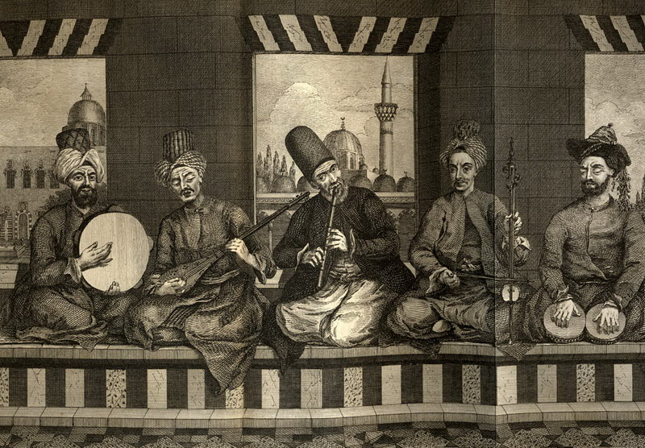
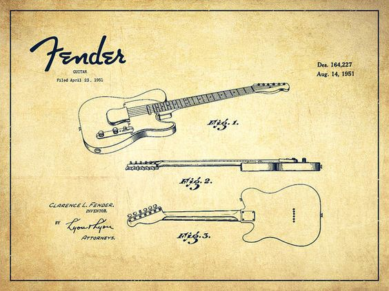

Explorando novos
territórios sonorosA música microtonal representa uma revolução na forma como pensamos sobre afinação, harmonia e composição musical
Explorando novos
territórios sonorosA música microtonal representa uma revolução na forma como pensamos sobre afinação, harmonia e composição musical
A música microtonal é um estilo musical que utiliza notas e melodias incomuns do que as presentes na música tradicional ocidental, onde a maioria das músicas conhecidas é construída a partir das 12 notas do sistema musical comum
Uma forma simples de imaginar isso é pensar nas teclas de um piano. Normalmente, cada tecla representa uma nota fixa. Na música microtonal, seria como pegar o espaço entre duas teclas — por exemplo, entre uma tecla branca e uma preta — e dividi-lo em partes ainda menores, criando novos sons “entre” as notas tradicionais
Embora pareça algo moderno e experimental, a microtonalidade já está presente há séculos em tradições musicais árabes, indianas e de outras culturas orientais, que utilizam sistemas musicais muito mais detalhados do que o modelo ocidental

A música microtonal é pouco conhecida no Ocidente porque a música europeia acabou padronizando o sistema musical em apenas 12 notas. Essa divisão facilitou a construção de instrumentos como pianos e violões, permitindo que eles fossem produzidos em massa e afinados de forma universal. Com o tempo, esse modelo se tornou o padrão dominante da indústria musical Ocidental.
Ao limitar a escala musical a essas 12 notas fixas, muitos dos sons e intervalos naturais presentes em outras culturas acabaram se perdendo. Por isso, sistemas musicais mais complexos — como os utilizados nas tradições árabes e indianas — passaram a ser vistos como incomuns ou experimentais pelo público Ocidental, mesmo existindo há séculos. Hoje, a música microtonal ainda é considerada “diferente” justamente porque nossos ouvidos foram acostumados desde cedo ao sistema musical tradicional.

Sistemas musicais milenares utilizando intervalos menores que semitons, como maqams árabes e ragas indianas, criando tradições ricas que persistem até hoje
Compositores como Julián Carrillo e Alois Hába começam experimentos sistemáticos com divisões alternativas da oitava no contexto da música erudita ocidental
Partch rejeita completamente o sistema de 12 tons, criando sua própria escala de 43 tons e construindo uma orquestra inteira de instrumentos customizados
Movimento brasileiro experimental em São Paulo, com artistas como Arrigo Barnabé e Itamar Assumpção incorporando atonalismo e microtons na MPB
Proliferação de artistas eletrônicos e experimentais explorando microtons graças a sintetizadores digitais e DAWs modernas
Flying Microtonal Banana traz microtonalismo ao rock mainstream, inspirando nova geração de músicos a experimentar com afinações alternativas
Vanguarda Paulista
A Vanguarda Paulista foi um movimento cultural que surgiu em São Paulo nos anos 1970 e 1980, marcado pela experimentação radical e pela ruptura com os padrões comerciais da música brasileira.
Em plena ditadura militar, artistas como Arrigo Barnabé, Itamar Assumpção e o Grupo Rumo criaram uma música que mesclava atonalismo, microtonalismo, jazz, rock e elementos da música erudita contemporânea com a realidade urbana de São Paulo.
O movimento representou uma revolução estética na MPB, abandonando melodias românticas em favor de harmonias dissonantes, ritmos irregulares e letras que retratavam o caos e a violência da metrópole paulistana.
CARACTERÍSTICAS PRINCIPAIS
1970s-80s
Período de atuação
São Paulo
Epicentro cultural
Experimental
Essência sonora
PRINCIPAIS NOMES
Itamar Assumpção
Arrigo Barnabé
Ná Ozzetti